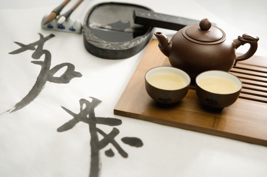

| 紫砂壶的选购方法 |
茶壶有很多种，陶的、瓷的、金的、铁的、铜的、锡的……这里我们只把焦距对在「宜兴紫砂壶」上头。在众多紫砂壶中，如何挑选到一把好壶，岂只是紫砂新生的难题，对悠游紫砂陶多年的老手，同样也是一个严肃的课题。紫砂壶既是着重功能性的实用品，又是可以把玩、欣赏的艺术品。所以，一把好的紫砂壶应在实用性、工艺性和鉴赏性三方面获得极高的肯定。壶艺爱好者在选购紫砂壶时，不妨就这三个重点加以考量。

第一：实用性
茶壶的天职就是要能拿来泡茶，这当然是毋庸置疑的，换言之，选择茶壶时便不应违背「实用」的基本原则。所以，选购时不妨先就其实用的功能加以考量。优良的实用功能是指其容积和容量的恰当，壶把的便于端拿，壶嘴出水的流畅，让品茗沏茶得以得心应手。因此，选购紫砂壶应依据个人的饮茶习惯，考量壶的容量，壶嘴出水的顺畅，壶把执握的舒适等等。一把实用的贴心好壶至少应具备下列几点:
1).容量大小需合己用。茶壶容量大小差距甚多，大者容水数升，小者仅纳一杯之量。同样的，有的人交游广泛，天天高朋满座，一周泡掉三斤茶，此时如果选用朱泥小壶来泡，那光是来回地倾茶注水便够他手忙脚乱，满头大汗了。反之，若三两好友促膝品茗，偏偏选用容水近升的大汉方壶，那岂不强迫人人非要牛饮一番不可，果真如此，那保证不出三个月，你的朋友会三个变两个，两个变孤支，到头来只有「举杯邀明月，对影成三人」的份了！
2).口盖设计合理，茶叶进出方便。国人爱喝的鸟龙茶系，在冲泡前呈干燥紧缩状态，借着茶则置入壶中并不太难，但经热水冲泡数巡之后，叶片逐一伸展膨胀开来，会将整个壶身塞得饱饱紧紧的（尤其置茶量过多时），此时如果壶口太小或设计不当时，就得费一番工夫才能将茶渣掏出。若一时疏忽，未清除干净，甚易在壶身内壁形成茶垢，甚至发霉，这就有碍健康了。
3).重心要稳，端拿要顺手。有些茶壶端拿之际十分沉重，这如果不是壶把设计不当，不符合人体功学，便是壶壁过厚（用土太多）。新手买壶时，不妨先在壶内盛装四分之三的水，单手提起，临摹倒水姿势。此举，一则试其量感是否过重。二则可趁此感觉执壶间，手指与壶把的施力位置是否舒适。端拿是否顺手相当重要，否则不但累了自己，更容易发生失手破壶的惨剧，不可不慎。况且，勉力为之，不免手上青筋暴露，脸上龇牙咧嘴，让客人未尝其甘，先见其苦，果真有够失礼。
4).出水要顺畅，断水要果快。此点是大部分茶壶不易顾及的。好壶出水刚劲有力，弧线流畅，水束圆润不打麻花。断水时，即倾即止，简洁俐落，不流口水，并且倾壶之后，壶内不留残水。
宜兴紫砂壶，长久以来，即被人们推崇为理想的注茶器。紫砂壶优良的实用功能，在明清两代的文献中即有所记载。明清两代人们认为茶壶之所以黜银锡及闽豫瓷，而尚宜陶，是由于紫砂壶能发出茶之色、香、味，并且既不夺香，又煮熟汤气。关于越宿不馊的说法也有其一定的道理。
紫砂壶之所以具有上述实用功能，主要是由于紫砂泥料的特性所决定的。紫砂壶是一种双重气孔结构的多孔性材质，气孔微细密度高，具有较强的附吸力。它能吸收茶之香味，且保持较长的时间，而施釉的陶瓷茶壶，这种功能比较欠缺。紫砂壶与施釉的陶瓷茶壶相比，茶汤确实不易变质发馊。这种功能由茶壶本身精密合理的造型所决定。紫砂壶的嘴小（嘴流出口成一定的斜角）壶口壶盖配合密切，位移公差0.5mm，口盖形式都成压盖结构。而施釉茶壶，壶嘴大都口朝上，口与盖的位移公差达1.5mm 左右，且口盖形式都成嵌盖结构。由于紫砂壶制作的精密度高，比施釉的瓷壶，减少了混有黄曲霉等霉菌的空气流向壶内的渠道。因此，相对地推进了茶汁变质发馊的时间。
紫泥确实是宜兴得天独厚的原料，它在成份上俱备了制陶所必须的化学组成及矿物组成。从显微观察发现，紫泥主要矿物为石英、粘土、云母和赤铁矿。同时这些矿物的颗粒组成（自然形成的颗粒的大小尺寸），适中的紫泥的矿物组成，具有类似中国大陆南方制瓷原料的特点，即其矿物组成属于粘土。合理的化学、矿物、颗粒组成，使紫泥俱备了可塑性好、生坯强度高、干燥收缩小等良好的工艺性能。紫泥粉碎的细度，以过60目筛为宜。泥料过粗制作时费功；泥料过细制作时粘手，坯体表面会引起皱纹，同时还会引起干燥，烧成收缩增大，降低烧成温度，则发生气泡缺陷。过60目筛的泥料，大的颗粒尚粗，在成型过程中系用精加工这道关键工，把器形周身理光，形成一层致密的表皮层。由于表皮层的存在，产品烧成的温度范围扩大了，不论在正常烧成温度的上限或下限，表皮层容易烧结，而壶身内壁仍能形成气孔。因此，成形时的精加工工艺，俱有把泥料、成型、烧成三者有机地联系在一起的作用，赋予紫砂表面光洁，虽不挂釉而富有光泽，虽有一定的气孔率而不渗漏等特点。紫泥经过1150℃烧成后，形成了残留石英、云母残骸、莫来石、赤铁矿、双重气孔等物相。双重气孔使产品俱有较高。